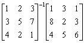
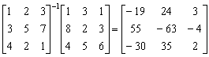

3x3逆矩陣乘法
編寫日期: 2005年12月20日
這個方法可以計算一個 3 × 3 逆矩陣及另一個 3 × n 矩陣的乘積，其中 n 是正整數。
例題: 計算:

按 2ndF MODE 2
1 = 2 = 3 = 1 =
3 = 5 = 7 = 8 =
4 = 2 = 1 = 4 = (顯示 -19) = (顯示 55) = (顯示 -30) = =
= = = 3 =
= = = 2 =
= = = 5 = (顯示 24) = (顯示 -63) = (顯示 35) = =
= = = 1 =
= = = 3 =
= = = 6 = (顯示 3) = (顯示 -4) = (顯示 2)
計算完結後按 2ndF MODE 0 返回正常計算模式。
所以

相關資料:
二階矩陣特徵多項式 ( Characteristic polynomial of 2×2 matrix)
二階矩陣特徵值 (Eigenvalues of 2×2 matri
3x3伴隨矩陣計算 (應用內置聯立三元一次方程 ) (3 × 3 Adjoint Matrix)
3x3逆矩陣的計算 (應用內置聯立三元一次方程 ) (3 × 3 Inverse matrix)
聯立三元一次方程 (Simultaneous Linear Equations in 3 unknowns)